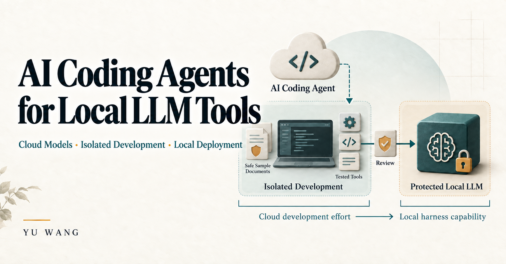

01 / In progress
AI Coding Agents for Local LLM Tools & Harnesses
I use AI coding agents powered by cloud-hosted models, such as Codex, to turn engineering requirements into local LLM tools, application workflows and checks.

A clear boundary between model access and execution
The coding agent uses a cloud-hosted model for reasoning and development assistance. The working environment, tool execution and authorized tests are local and isolated. I use safe or synthetic data during this development process, then prepare completed changes for deployment to protected on-premises environments.
The aim is to turn cloud-token investment into reusable local capabilities: tools, routing, retrieval and validation. My work focuses on the application around the model.
The development approach
- Define the task and its boundaries. Identify the inputs, expected result, permitted operations and acceptance criteria.
- Develop locally with an AI coding agent. Use Codex with safe or synthetic inputs to implement and revise tools in an isolated working environment.
- Check behavior before deployment. Exercise routing, output formats, failure handling and recovery within the authorized test scope.
- Prepare a controlled deployment. Check versions and environment requirements, retain snapshots and recovery procedures, and keep acceptance specific to the target environment.
What I developed
- Open WebUI tools and filters for knowledge sources, document attachments, citations and explicit research routing.
- A constrained public-research bridge and structured summarization, text-comparison and fact/risk/action workflows.
- A consulting application harness with task routing, retrieval over cached summaries, case-state updates and post-generation checks.
- Replayable evaluations that help locate failures in routing, model integration, formatting and state updates.
- Deployment checks, local simulation, versioned snapshots and recovery procedures for protected application environments.
Current stage
In progress
Components have been implemented, with environment-specific validation in progress. Open WebUI integrations have historical records of actual tool use. A separate consulting harness remains a prototype, and its latest integration evaluation used a simulated model. Live model quality and protected-environment acceptance remain separate from those development checks.
The work does not include model-weight training or a measured claim of faster inference.